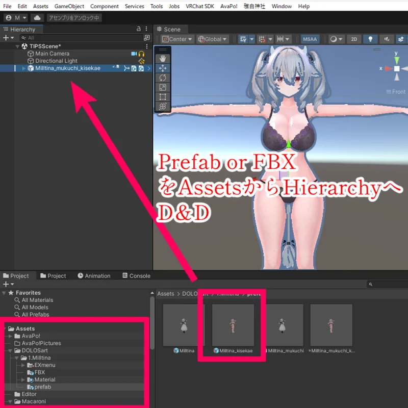
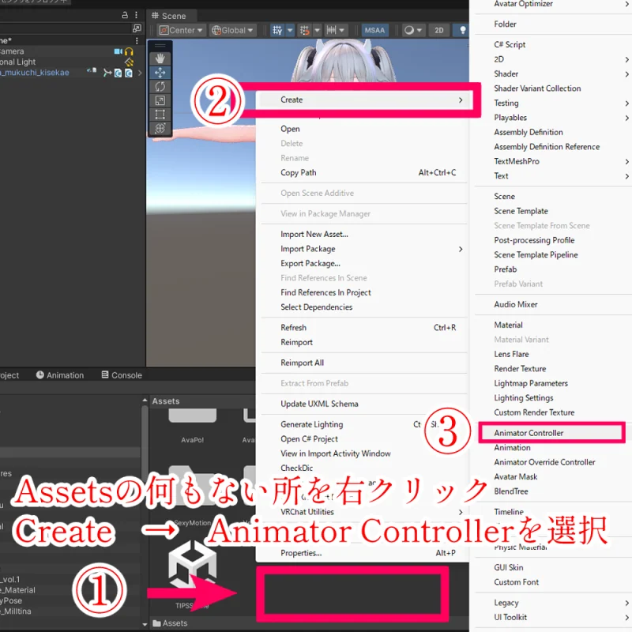
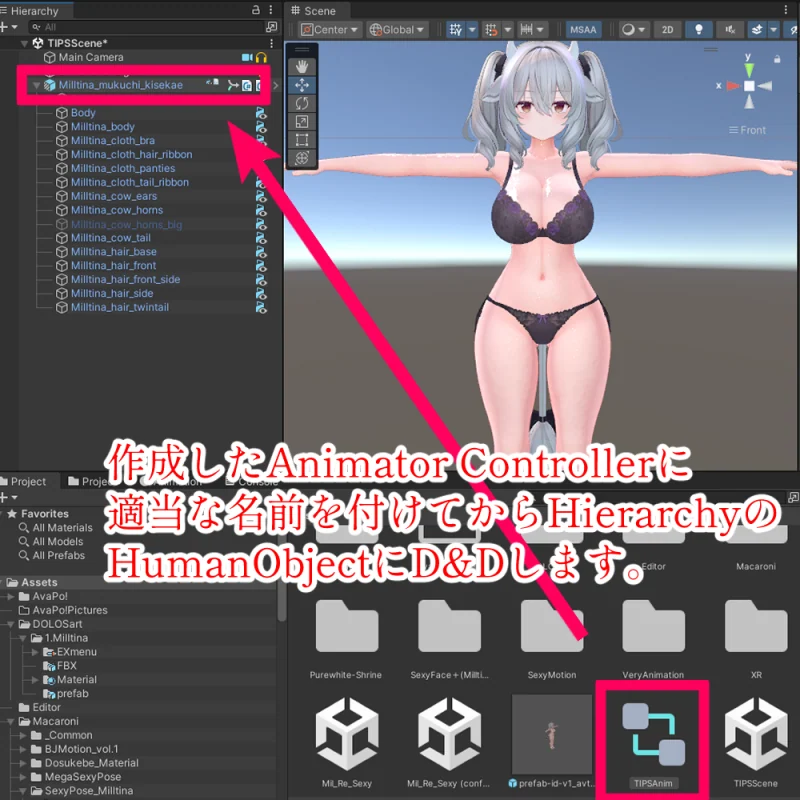
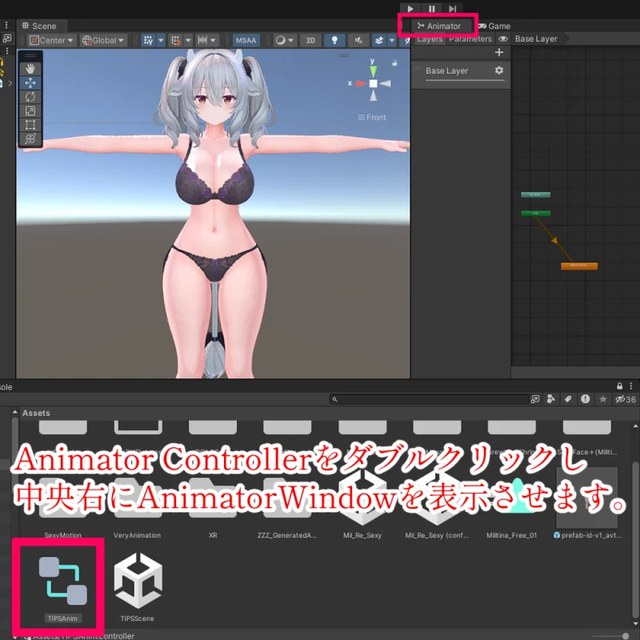
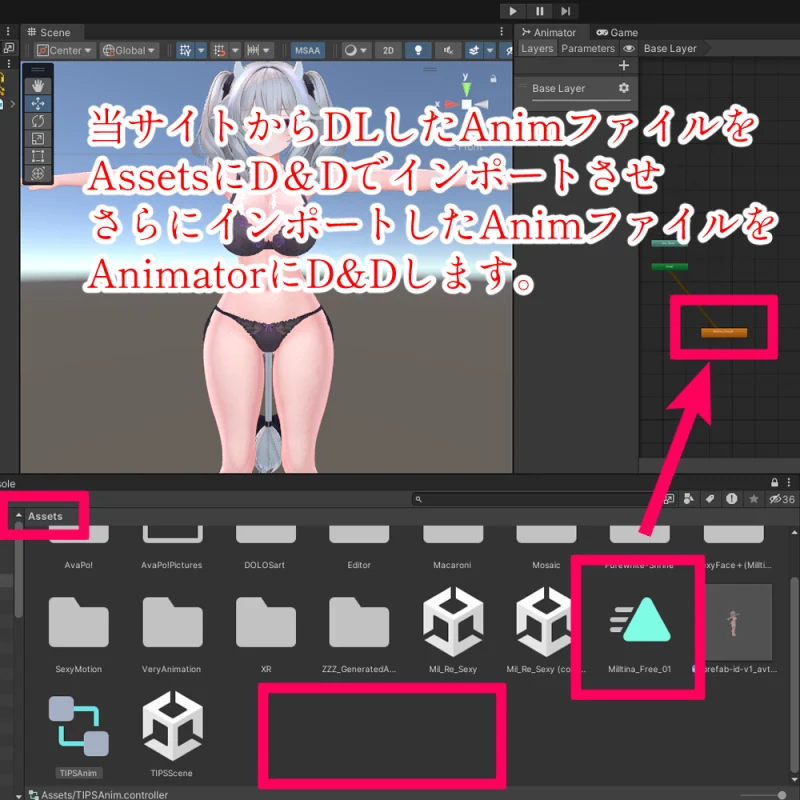
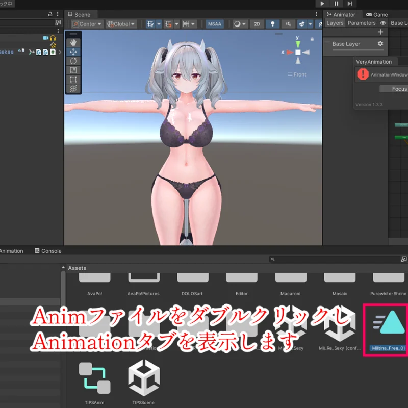
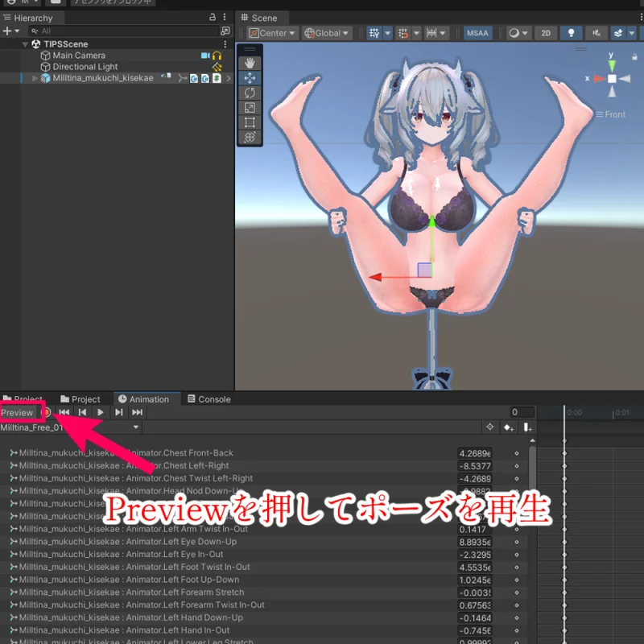

UNITY
Unityでanimファイルを入れる時の基本
マカロニTIPS
この記事では、ダウンロードした .anim ファイルをUnityへ入れて、アバターにポーズが反映されるところまでを画面の流れに沿って説明します。

Unityでanimファイルを入れる時の基本
やることは、アバターをHierarchyへ置く、Animator Controllerを作る、親オブジェクトへ設定する、animをAnimatorへ入れてPreviewで見る、の4つです。
事前に用意するもの
- FBX、またはセットアップ済みのHumanPrefab
- 当サイトからダウンロードした
.anim ファイル
.anim は、それだけで勝手に動くファイルではなく、Unity上ではAnimation Clipとして扱われます。アバターで確認するには、Animator Controllerへ登録して、アバター側のAnimatorに読ませる必要があります。
慣れていないうちは、本番アバターへいきなり入れず、複製したPrefabやテスト用Sceneで試すのがおすすめです。動かなかった時に、素材側の問題なのか、設定場所のミスなのかを切り分けやすくなります。
1. FBXまたはHumanPrefabをHierarchyに配置する
まずは、Assets内にあるFBX、またはセットアップ済みのHumanPrefabをHierarchyへドラッグ＆ドロップします。ここでScene上にアバターが表示されればOKです。

このあと設定するのは、Bodyや髪、服などの子オブジェクトではなく、アバター全体をまとめている一番上のHumanObjectです。
迷ったら、画像のようにHierarchyで一番上にある Milltina_mukuchi_kisekae のような親オブジェクトを選びます。Bodyや髪パーツにControllerを入れると、思った通りに動かないことがあります。
2. Animator Controllerを作成する
ProjectウィンドウのAssets内で、何もない場所を右クリックします。メニューが出たら Create > Animator Controller を選びます。

作成したAnimator Controllerには、あとから見ても分かる名前を付けておきます。名前は動作に影響しませんが、整理しておくと後でかなり楽です。
PosePreview_ControllerTIPSAnim_ControllerSamplePose_Controller
Unityでは、Animation ClipをGameObjectで使う時にAnimator Controllerを経由します。ポーズが1個だけでも、まずはControllerを作る、と覚えておくと分かりやすいです。
3. ControllerをHumanObjectに設定する
ここが一番大事です。作ったAnimator Controllerを、さきほどHierarchyに置いたHumanObjectへ入れます。
- Hierarchyで、アバター全体の親になっているHumanObjectを選びます。
- Projectウィンドウで、作成したAnimator Controllerを探します。
- Animator ControllerをHumanObjectへドラッグ＆ドロップします。
- InspectorのAnimatorコンポーネントにある
Controller 欄へ入っていればOKです。

ドラッグ＆ドロップで反映されない時は、HumanObjectを選択したままInspectorを見て、Animatorコンポーネントの Controller 欄へ直接入れてください。Animatorコンポーネントがない場合は、Add Component > Animator で追加してからControllerを入れます。
Project内にAnimator Controllerを作っただけでは、アバター側には何も起きません。必ずHierarchy上のHumanObjectへ設定します。
4. Animator Controllerを開く
Projectウィンドウ内のAnimator Controllerをダブルクリックします。画面の中央か右側にAnimatorウィンドウが出てくればOKです。

Animatorウィンドウは、animファイルをStateとして登録する場所です。Animationタブとは役割が違うので、ここは分けて考えると迷いにくいです。
- Animatorウィンドウ: animファイルをStateとして登録する場所
- Animationタブ: animファイルの中身やPreviewを確認する場所
5. ダウンロードしたanimファイルをUnityに入れる
当サイトからダウンロードした .anim ファイルを、UnityのAssets内へドラッグ＆ドロップします。Projectウィンドウにanimファイルが表示されれば、Unityへの取り込みはできています。

ここではまず「Assetsにanimファイルが入った状態」を確認できれば大丈夫です。
複数のポーズやモーションを使う場合は、Assets内に Pose や Anim のようなフォルダを作ってまとめておくと、後から探しやすくなります。
6. animファイルをAnimatorへ登録する
ここは、ひとつ前の画像の続きです。Assetsに入れたanimファイルを、右側に表示しているAnimatorウィンドウへドラッグ＆ドロップします。
- Projectウィンドウで、取り込んだ
.anim ファイルを見つけます。
- Animatorウィンドウの何もない場所へ、animファイルをドラッグ＆ドロップします。
- 四角いノードが作られたら登録成功です。このノードをStateと呼びます。
- 最初に再生したいStateがオレンジ色になっているか確認します。
- オレンジ色でない場合は、そのStateを右クリックして
Set as Layer Default State を選びます。
よくあるのは、animをProjectに入れただけで止まってしまうパターンです。Projectに入れるだけでは再生されないので、Animatorウィンドウへ入れてStateができるところまで進めます。
7. AnimationタブでPreview確認する
最後に、実際にポーズが出るか確認します。animファイルをダブルクリックするか、Window > Animation > Animation からAnimationタブを開きます。

- HierarchyでHumanObjectを選びます。
- Animationタブ上部のClip選択欄から、確認したい
.anim を選びます。
- 左上のPreviewを押します。
- ポーズ用animなら、Scene上のアバターにポーズが反映されるか見ます。
- モーション付きanimなら、再生ボタンやタイムラインを動かして確認します。

確認するだけなら、赤いRecordボタンは触らなくて大丈夫です。Recordをオンにすると編集モードになり、意図しないキーを追加してしまうことがあります。
完了の目安
ここまでできていれば、最低限の再生確認は完了です。
- HierarchyにHumanObjectが配置されている
- HumanObjectのAnimatorにAnimator Controllerが設定されている
- AnimatorウィンドウにanimファイルのStateが追加されている
- 再生したいStateがDefault Stateになっている
- AnimationタブでPreviewを押すと、Scene上のアバターにポーズが反映される
うまく再生されない時の確認ポイント
Previewを押してもポーズが変わらない
HumanObjectではなく、Bodyや髪などの子オブジェクトを選んでいる可能性があります。Hierarchyで、アバター全体をまとめている一番上のオブジェクトを選び直してください。
Animatorにanimを入れても再生されない
Animator ControllerがHumanObjectに入っているか確認します。Project内にControllerを作っただけだと、アバターにはまだ反映されません。
Animationタブに何も表示されない
Animationタブは、選んでいるGameObjectやAnimation Clipに合わせて表示が変わります。HumanObject、または確認したいanimファイルを選び直してみてください。
別アバターで崩れる、動かない
Humanoid用のアニメーションを別アバターで使う場合、モデル側のAvatar設定が必要です。FBXのRig設定でAnimation TypeがHumanoidになっているか、Avatarが正しく作成されているか確認してください。
作業を切り分けたい時
- テスト用Sceneで試す
- テスト用Animator Controllerを1つだけ作る
- 既存のFX、Gesture、Action Controllerへいきなり混ぜない
- まず1つのanimだけをDefault Stateにして動作を見る
最初は「HumanObjectを置く、Controllerを入れる、animをAnimatorに入れる、Default Stateにする、Previewで見る」だけに絞ると原因を追いやすいです。ここで動けば、少なくともanim自体はUnity上で再生できる状態だと判断しやすくなります。